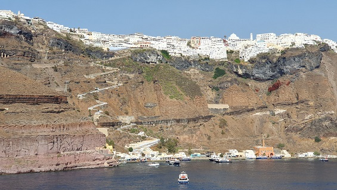
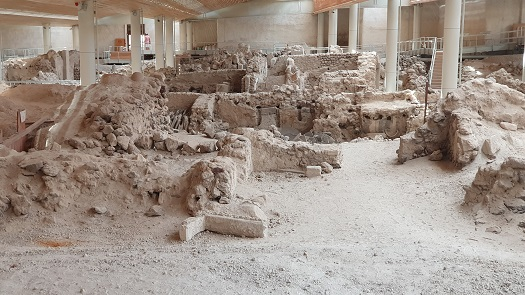
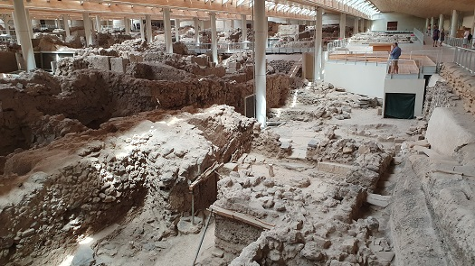
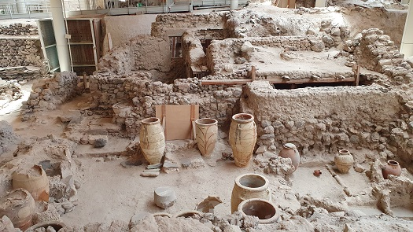
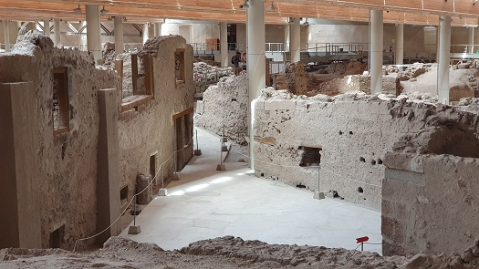
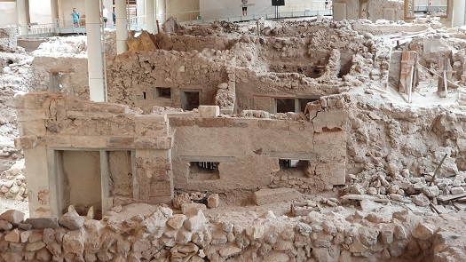
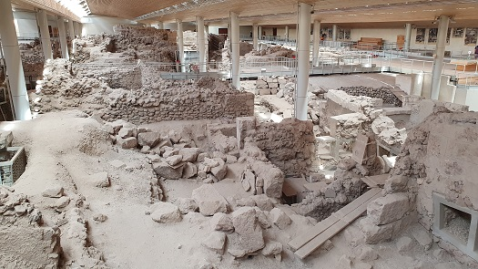

La caldera de Santorini es una bahía en forma de
media luna que se formó después de una erupción volcánica hace miles de
años.
Destaca su asombroso paisaje y su ubicación estratégica que ofrece unas
vistas espectaculares.
La caldera está rodeada por altos acantilados de mas de 250m.

El Yacimiento de Akrotiri, está
situado en la zona sur de la isla de Santorini, Thera. A 10km de Fira.
Es uno de los yacimientos arqueológicos prehistóricos más importantes
del Mediterráneo, ya que en él se han encontrado restos arqueológicos de
principios de la Edad de Bronce.
Ciudad Minoica con más de 3.500 años de antigüedad.
Fue uno de los centros urbanos más importantes del Mediterráneo.
Calles con redes de alcantarillado, plazas y edificios públicos y
privados de varios pisos, alguna vez equipados con ricos enseres
domésticos y decorados con frescos...
Una ciudad antigua que quedó enterrada en ceniza tras la erupción del
volcán de Santorini.
La erupción y el posterior maremoto están atestados históricamente. Los
efectos llegaron a todo el arco mediterráneos.
Akrotiri también es conocida como la «Pompeya Minoica».
Una visita guiada, muy buena.
Si estás en Santorini, tienes que visitar Akrotiri.
Es impresionante!!!
|
 |
 |
| |
|
|
 |
 |
| |
|
|
 |
 |
|